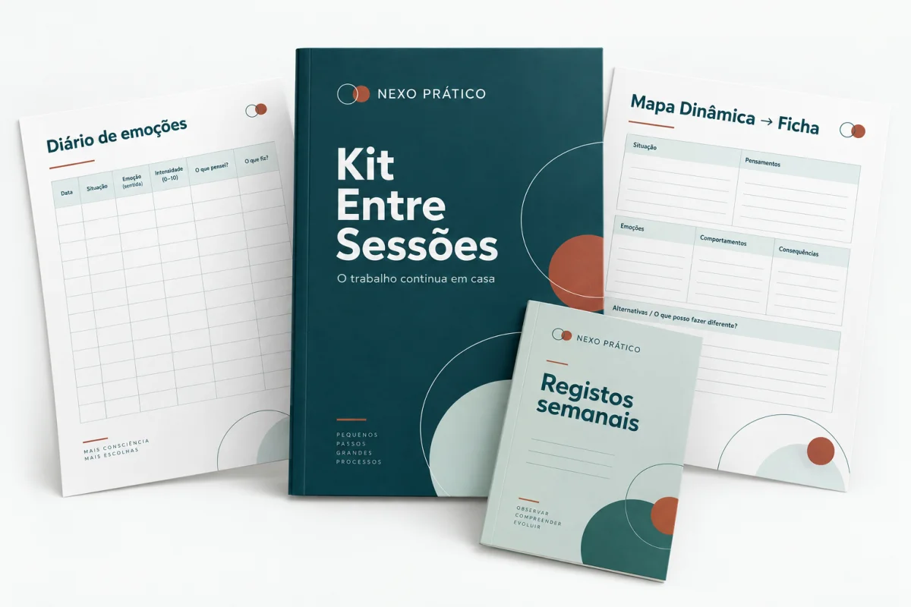

+100 fichas de trabalho para casa: organizadas pelos mesmos 5 objetivos das suas dinâmicas: ansiedade, autoestima, autoconhecimento, emoções e comunicação.
NEXO PRÁTICO Entre sessões
Uma oferta mais acessívelLeve o Kit Entre Sessões completo por apenas 12,90 €
Se o preço o fez hesitar, pode acrescentar o mesmo kit à sua compra por menos 5 €.
Já garantiu as dinâmicas para trabalhar em consulta. As fichas do Kit Entre Sessões ajudam a dar continuidade a esse trabalho em casa, até ao próximo encontro.
Na página anterior, apresentámos-lhe o kit por 17,90 €. Agora, pode levar todo o conteúdo por 12,90 €, com acesso vitalício e a mesma garantia de 7 dias.
O mesmo kit completo, com um desconto de 5 €

POUPA 5 €
Oferta anterior: 17,90 €
12,90 €
acesso vitalício
SIM, QUERO O KIT COMPLETO POR 12,90 € →
Valor adicional à sua compra das 250 dinâmicas.
Recebe todos estes materiais
Registos semanais prontos: diário de emoções, registo de pensamentos e escala de humor, para o paciente preencher e trazer para a sessão.
Folhas de psicoeducação: explicações de uma página, em linguagem simples, para entregar ao paciente. O que é a ansiedade, como funciona a autoestima e muito mais.
O Mapa Dinâmica → Ficha: uma tabela que liga cada dinâmica do seu kit à ficha de casa certa. Aplica a dinâmica na sessão e já sabe o que entregar para a semana.
Tudo editável, pronto a imprimir ou a enviar por e-mail, no computador, tablet ou telemóvel.
Da consulta para casa, com uma tarefa preparada
Depois de trabalhar um tema na sessão, escolha uma ficha relacionada e adapte-a ao paciente. Na consulta seguinte, pode usar os registos da semana como ponto de partida para a conversa.
Garantia de 7 dias. Se experimentar as fichas e sentir que não são para si, devolvemos 100% do valor. Sem perguntas.
QUERO APROVEITAR O KIT POR 12,90 € →
Kit completo · Garantia de 7 dias
Antes de decidir
É o mesmo kit da oferta anterior?
Sim. Recebe as mesmas fichas de trabalho, registos semanais, folhas de psicoeducação e o Mapa Dinâmica → Ficha. O preço passa de 17,90 € para 12,90 €.
Como recebo o material?
No mesmo e-mail de acesso das dinâmicas, após a confirmação da compra do Kit Entre Sessões.
E se preferir ficar apenas com as dinâmicas?
A sua compra das 250 dinâmicas mantém-se. O Kit Entre Sessões é um complemento opcional e pode continuar sem o adicionar.
Complete os seus materiais por 12,90 €
Tenha as dinâmicas para a sessão e as fichas para o trabalho em casa.
Não, obrigado. Quero continuar apenas com as 250 dinâmicas.